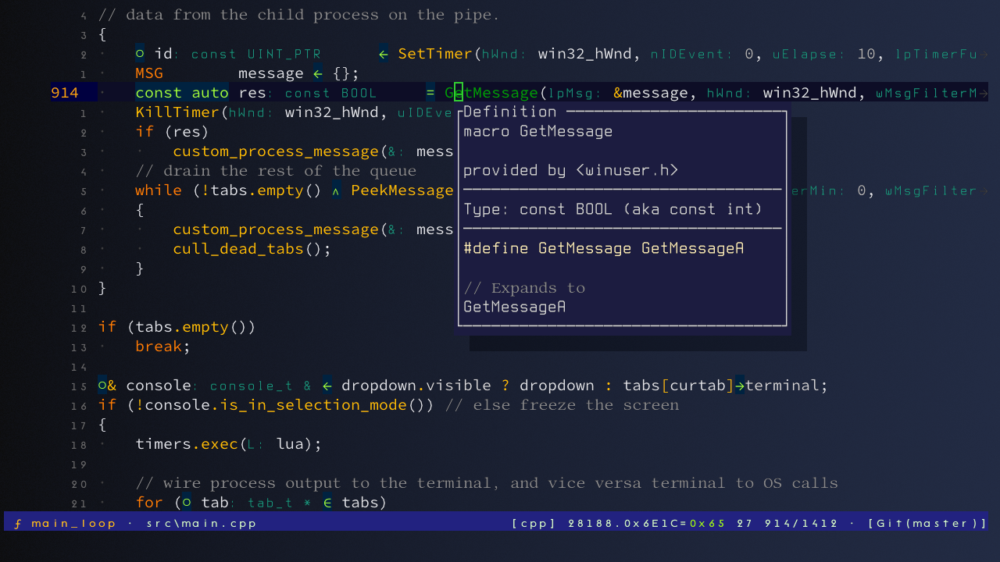
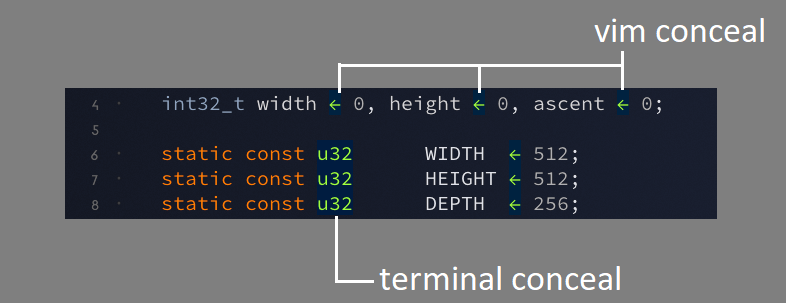

You probably don't want to use it. I suggest WezTerm instead.
This binary...
^[ sequences I need (nvim, bat, ov, yazi)exit(-1). It didn't crash, it seppuku'd.
† see terminal.save() instead.
All of these are by design. In short, it suits my needs, and quite likely not yours.
...but on the other hand...

rnu use Lack" in vim
highlight Comment guifg=#89898c
-- in ponsole_run.lua
terminal.set_tab_color_font(0, true, hex_color(0x89/255, 0x89/255, 0x8c/255), 1)
-- in ponsole_cfg.lua
config = {
...
fonts = {
-- default goes here
...
-- comment font
"LibertinusMono-Regular.ttf",
In the real world, we perhaps need a font equivalent of the Kitty Graphics Protocol. Perhaps there already is one (CSI SCS?).
You can rewrite output on the fly. For example, replace
uint32_t with u32.
This is essentially the vim conceal
feature, but allowing a substitution string instead of just a single character.
It is however a simple match, no regex.

Since nvim doesn't know about the rewrite, this would break the UI, so in reality
the example substitution will be u32····· (showing dots for spaces).
Lua 5.3 is embedded, so you can script opening tabs, sending keys, custom conceals, etc.
Set it all up with config scripts, and/or use the Quake-style dropdown
(ctrl-shift-tilde).
Type help "" in the dropdown to get started, or
dofile ...; it's a Lua prompt.
There is basic background image support for anything stb_image can load.
The image always fits vertically, and assumes output referred sRGB, Rec709 primaries, D65.
Pixels are multiplied with the background gradient -- which is always horizontal by the way.
HDR is supported when the primary monitor is HDR, and
"HDR/SDR brightness balance" > 10 (in "Windows HD color settings").
You can crank the cursor intensity, and also remap colors from SDR to HDR in the same
spirit as font changes:
" in vim
highlight Search guifg=#ffff80
-- in ponsole_run.lua
-- make &hlsearch really pop out
terminal.set_tab_remap_color(0, true, hex_color(0xff/255, 0xff/255, 0x80/255), { 5, 5, 2.5, 1 })
-o and study the spam in dbgview64.
Release: 2024-12-25
ponsole_2024_12_25.7z - 249KB